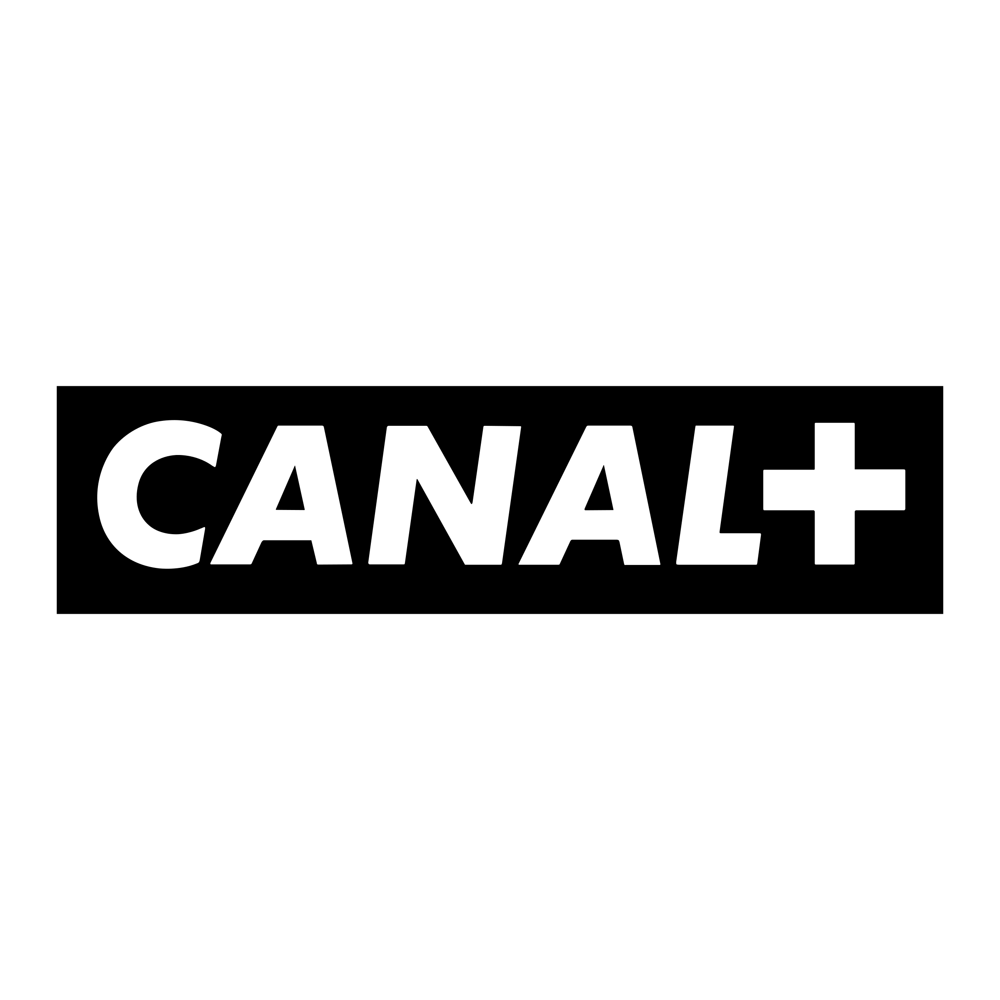
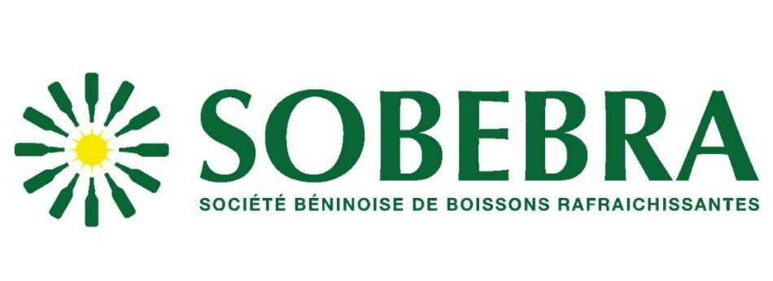

Certifications Cyber
• ISC2 Certified in Cybersecurity (CC)
• SecNumAcadémie (ANSSI)
• Formation Hacking Éthique (Udemy)
Analyste Cybersécurité | Orienté GRC-Opérationnelle | Automatisation No-Code & IA
Je suis Carlos HOUNSOUNON. Actuellement étudiant en Cybersécurité, je porte un intérêt particulier aux enjeux de la GRC (Gouvernance, Risque et Conformité). Mon ambition est de m'orienter vers le management des risques de sécurité : je ne vois pas la cyber comme une simple barrière technique, mais comme un levier pour anticiper les menaces en tenant compte des exigences réelles et stratégiques de chaque métier.
En parallèle, je développe des workflows automatisés via le No-code et l'IA. Mon rôle est d'apporter un réel gain de temps aux PME et aux indépendants en accompagnant l'automatisation de leurs processus répétitifs et énergivores.

Stage Assistant Informatique (Août - Déc 2024)
Refonte du plan d'adressage IP par service, enrôlement de flotte via Microsoft Intune et gestion du cycle de vie des identités (IAM) en conformité avec la PSSI du groupe.

Stage Assistant Réseau et Sécurité (Avril - Juin 2024)
Supervision d'infrastructure (ELK, PRTG), administration CISCO (ACL, SSH) et maintenance du câblage structuré.
Stage Informatique (Août - Sept 2023)
Déploiement du MFA pour la sécurisation des accès LAN et gestion opérationnelle des vulnérabilités sur le périmètre bancaire.
• ISC2 Certified in Cybersecurity (CC)
• SecNumAcadémie (ANSSI)
• Formation Hacking Éthique (Udemy)
• Cisco (VLAN, ACL, Routage)
• Windows AD/GPO & Linux
• Wireshark, Nmap, Kali Linux
• Workflows Make
• Python, Bash/Shell
• Virtualisation (VMs, Docker)
• Web (HTML, CSS, JS)
• Analyse Anti-Bot & IA
• Sécurité de la Supply Chain
Évaluation des solutions de filtrage comportemental face aux menaces automatisées par l'IA. Benchmark de WAF intelligents.
Étude sur la sécurisation des interconnexions et le contrôle des accès prestataires (GRC) selon NIS2.
Expertise en automatisation de processus métiers et sécurisation de données.